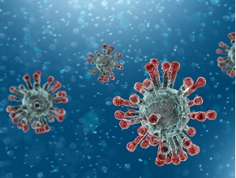
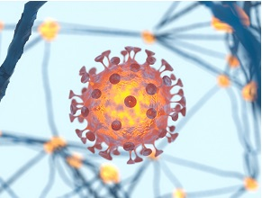
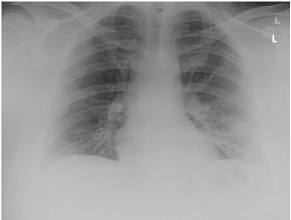
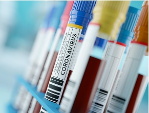
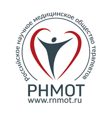
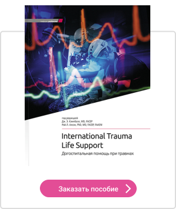

Эффективен ли азитромицин в лечении больных с COVID-19?
Интерес применением азитромицина для лечения заражения SARS-CoV-2 был вызван недавней публикацией исследователей из Франции1 об оценке эффективности комбинированной терапии гидроксихлорохином с азитромицином у пациентов с COVID-19.Надежду на ожидаемый успех в поиске эффективной этиотропной терапии COVID-19 дополнительно укрепил комментарий соавтора статьи, профессора Didier Raoult из Méditerranée Infection University Hospital Institute, который объявил 'спектакулярное уменьшение количества положительных случаев' еще перед официальной публикацией результатов исследования.Международная дискуссия обострилась после того, как президент США Дональд Трамп опубликовал полный энтузиазма пост в Twitter, в котором описал терапию этими двумя лекарственными средствами как 'большой прорыв' в истории медицины, несмотря на то, что сопровождающий его на предыдущей пресс-конференции проф.Antony Fauci - директор американских National Institutes of Health - решительно пытался успокоить его преждевременный энтузиазм.Недаром, поскольку широко комментируемая публикация имеет очень многие методологические недостатки, которые приводят к тому, что качество полученных данных очень низкое, а исследование на самом деле даже не соответствует минимальным критериям достоверной оценки метода лечения.
Отбор к исследованию прошли 42 пациента с лабораторно подтвержденным (ОТ-ПЦР) заражением SARS-CoV-2 с разной клинической картиной (бессимптомная инфекция, симптомы воспаления верхних дыхательных путей, пневмония), в основном взрослые, которые нуждались в лечении или изоляции в условиях стационара.1 Эффекты применения гидроксихлорохина в монотерапии (200 мг п/о 3 раза в сутки в течение 10-ти дней, 20 взрослых пациентов) или в комбинации с азитромицином (6 взрослых пациентов) оценивали путем сравнения группы из 26-ти пациентов, госпитализированных в Méditerranée Infection University Hospital Institute, с контрольной группой 16 человек, зараженных вирусом SARS-CoV-2, из Марселя и нескольких других центров на юге Франции.Контрольная группа включала, в том числе, 4-х детей с бессимптомной инфекцией.Авторы основывали оценку эффективности на суррогатной конечной точке элиминации инфекции SARS-CoV-2 на 6-й день наблюдения, которую они определили как отрицательный результат молекулярного исследования (ОТ-ПЦР) культуры из материала, собранного с помощью мазка из носоглотки.Решение о начале лечения гидроксихлорохином или азитромицином принималось отдельными врачами индивидуально, основываясь на клинической оценке пациентов (можно предположить, что решение базировалось на тяжести симптомов, однако единые критерии не были определены).ЭКГ ежедневно оценивали у всех пациентов, получавших комбинированную терапию, из-за риска удлинения интервала QT, которое может вызвать серьезные осложнения лечения.После 6-ти дней лечения в группе, получавшей гидроксихлорохин в монотерапии (14 пациентов), процент зараженных снизился примерно до 43 %, ни у одного пациента из группы комбинированной терапии с азитромицином не выявлено заражения, тогда как в контрольной группе (16 пациентов) инфицирование подтверждено у 87,5 % испытуемых.
Какие сомнения вызывает французская публикация?В исследование была включена очень небольшая группа пациентов (всего 6 пациентов получали азитромицин!), без рандомизации, а распределение пациентов в отдельные группы проводилось врачами произвольно на основании неоднородных, субъективных оценок.В результате было получено очень неравномерное и неслучайное распределение известных (а значит, вероятно, также и неизвестных) прогностических факторов в 3-х исследуемых группах (в частности возраст, клиническая картина инфекции, время от появления симптомов до отбора для исследования; см табл.), которое затрудняет оценку были ли наблюдаемые эффекты, и если да - то в какой мере - действительно результатом применяемого лечения.Клиническое исследование было открытым.Авторы не предоставили никаких сведений о клинических эффектах оцениваемой терапии, а вирусологическим критерием (элиминация инфекции) была суррогатная конечная точка, которая не указывает автоматически на то, что клинические симптомы и осложнения прошли.2,3 Последние публикации также свидетельствуют о том, что SARS -CoV-2 может сохраняться в верхних дыхательных путях с различной степенью выраженности в течение в среднем 20 дней (максимум 37 дней) и его присутствие не является постоянным, поэтому 6 дней наблюдения кажутся слишком коротким периодом для проведения возможной оценки элиминации инфекции.2,3,4
Стоит также отметить, что авторы окончательно отобрали для анализа только 36 из 42-х пациентов и исключили из него 6 пациентов, проходивших лечение в экспериментальных группах (23 %) и не закончили исследования – 3 требовали лечения в отделении интенсивной терапии, 1 умер, и 2 пациента прекратили лечение до окончания наблюдения.Зато все пациенты из контрольной группы завершили наблюдение.Авторы не оценили или недостаточно точно описали побочные эффекты лечения, а в контексте потенциального применения гидроксихлорохина с азитромицином в рутинной практике следует учитывать риск удлинения интервала QT и, как следствие, опасных для жизни аритмий.Из-за всех этих замечаний сложно рассматривать эту публикацию как возможную основу для применения такой комбинированной терапии на практике у пациентов с COVID-19.Это все еще остается гипотезой (несомненно, привлекательной), поэтому нам следует быть очень осторожными при применении этих наблюдений в клинической практике без их предварительной тщательной проверки в правильно запланированных, достаточно крупных рандомизированных исследованиях.5 Такая быстрая верификация возможна во время пандемии SARS-CoV-2, что недавно продемонстрировали китайские авторы, оценивая эффективность лопинавира с ритонавиром.3,5
Posted On: 2020-04-20T21:00:00








Content Date: 2020-04-20
Download Date: 2021-06-20
Document ID: L0C04CX6Q